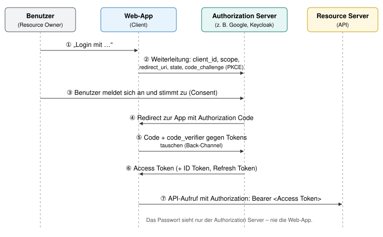

Lektion 2.2 — Teil 2: Umsetzung mit Next.js
OAuth 2.0, OpenID Connect & SSO
Lernziele
- Erklären, welches Problem OAuth 2.0 löst
- Die vier Rollen in OAuth 2.0 sowie Scopes und Consent beschreiben
- Den Authorization Code Flow mit PKCE Schritt für Schritt erklären
- Den Unterschied zwischen OAuth 2.0 (Autorisierung) und OpenID Connect (Authentifizierung) erklären
- Access Token und ID Token unterscheiden
- Single Sign-On und Identity Federation mit Vor- und Nachteilen beschreiben
- „Anmelden mit …“ mit
openid-clientin Next.js umsetzen
1 — Das Problem: Passwörter weitergeben
Eine Fotodruck-App möchte auf deine Bilder in einem Cloud-Speicher zugreifen. Früher hätte die App einfach nach deinem Cloud-Passwort gefragt. Damit hätte sie aber vollen Zugriff auf alles gehabt – E-Mails, Dokumente, Kontoeinstellungen –, und zwar unbegrenzt, bis du dein Passwort änderst.
OAuth 2.0 (RFC 6749) löst das: Statt des Passworts erhält die App ein Access Token mit eingeschränkten Rechten („nur Fotos lesen“), das zeitlich begrenzt ist und jederzeit widerrufen werden kann. Dein Passwort gibst du nur beim Anbieter selbst ein.
OAuth ist ein Standard für delegierte Autorisierung: Du erlaubst einer Anwendung, in deinem Namen auf eine bestimmte Ressource zuzugreifen. Das Access Token kennst du bereits als Bearer Token aus Lektion 1.4.
2 — Rollen, Scopes und Consent
| Rolle | Bedeutung | Im Beispiel |
|---|---|---|
| Resource Owner | Wem gehören die Daten? | du |
| Client | Anwendung, die zugreifen möchte | Fotodruck-App |
| Authorization Server | prüft die Identität, holt die Zustimmung ein und stellt Tokens aus | Login-Server des Cloud-Anbieters |
| Resource Server | API, die die Daten bereitstellt und Access Tokens prüft | Foto-API des Cloud-Anbieters |
- Scopes beschreiben, welche Rechte der Client anfordert, z. B.
photos.readodercalendar.write. Das Access Token enthält nur die gewährten Scopes. - Consent ist die Zustimmung des Benutzers: „Die App Fotodruck möchte deine Fotos sehen. Erlauben?“
- Jeder Client wird beim Authorization Server registriert und erhält eine
client_id; Clients mit eigenem Backend zusätzlich einclient_secret.
| Client-Typ | Beispiel | Kann ein Secret geheim halten? |
|---|---|---|
| Confidential Client | Web-App mit eigenem Backend | ja, es liegt am Server |
| Public Client | Single-Page-App, Mobile-App | nein – der Code ist auf dem Gerät des Benutzers lesbar |
3 — Der Authorization Code Flow mit PKCE
OAuth beschreibt mehrere Abläufe (Flows bzw. Grant Types). Für Anwendungen, in denen sich ein Mensch anmeldet, ist der Authorization Code Flow mit PKCE der empfohlene Standard – für Web-, Single-Page- und Mobile-Apps.

- Der Benutzer klickt in der App auf „Anmelden mit …“.
- Die App leitet den Browser zum Authorization Server weiter. In der URL stehen u. a.
client_id, die gewünschten Scopes, dieredirect_uri(wohin danach zurück?), ein zufälligerstateund einecode_challenge. - Der Benutzer meldet sich beim Authorization Server an (inkl. MFA) und stimmt zu.
- Der Authorization Server leitet zurück zur
redirect_uriund hängt einen kurzlebigen, einmal verwendbaren Authorization Code sowie denstatean. - Die App tauscht den Code direkt beim Authorization Server (ohne Browser, „Back-Channel“) gegen Tokens ein und schickt dabei den
code_verifiermit. - Sie erhält ein Access Token, ggf. ein Refresh Token und – bei OpenID Connect – ein ID Token.
- Mit dem Access Token ruft die App die API auf.
Wozu state und PKCE?
| Parameter | Funktionsweise | Schützt gegen |
|---|---|---|
| state | Zufallswert, den die App vor der Weiterleitung speichert und nach der Rückkehr vergleicht | untergeschobene Antworten (CSRF auf den Login-Ablauf) |
| PKCE (Proof Key for Code Exchange, „pixie“) | Die App erzeugt ein Geheimnis (code_verifier) und schickt anfangs nur dessen Hash (code_challenge). Beim Eintauschen muss sie das Original vorlegen. | gestohlene Authorization Codes – ohne code_verifier sind sie wertlos |
| redirect_uri (exakt registriert) | Der Authorization Server leitet nur an vorher registrierte, exakt übereinstimmende Adressen weiter | Umleitung des Codes auf eine Angreifer-Seite |
4 — Weitere Grant Types
| Grant Type | Einsatz | Status |
|---|---|---|
| Authorization Code + PKCE | Benutzer meldet sich in Web-, SPA- oder Mobile-App an | empfohlen |
| Client Credentials | Maschine-zu-Maschine: ein Backend-Dienst ruft eine API auf, ohne dass ein Benutzer beteiligt ist | empfohlen |
| Device Authorization | Geräte ohne bequeme Tastatur (Smart-TV, CLI): Code am Handy bestätigen | empfohlen |
| Refresh Token | neues Access Token holen (Lektion 1.4) | empfohlen |
| Implicit | Token direkt in der Redirect-URL, früher für SPAs | veraltet – Token landet im Browser-Verlauf |
| Resource Owner Password Credentials | App sammelt das Passwort selbst ein | veraltet – widerspricht der Idee von OAuth |
Die überarbeitete Fassung OAuth 2.1 fasst die Best Practices zusammen: PKCE für
alle Clients, exakter Vergleich der redirect_uri, kein Implicit und kein Password Grant.
5 — OpenID Connect: Authentifizierung auf Basis von OAuth
OAuth beantwortet „Darf diese App auf die Fotos zugreifen?“, aber nicht „Wer ist der Benutzer?“. Ein Access Token ist für die API bestimmt, nicht für die App – die App soll es nicht interpretieren. Trotzdem wurde OAuth früher oft als Login missbraucht, mit eigenen, teils unsicheren Lösungen je Anbieter.
OpenID Connect (OIDC) ist eine standardisierte Identitätsschicht über OAuth 2.0.
Fordert die App den Scope openid an, erhält sie zusätzlich ein ID Token:
ein JWT, das bestätigt, wer sich wann bei wem angemeldet hat.
| Access Token | ID Token | |
|---|---|---|
| Standard | OAuth 2.0 | OpenID Connect |
| Zweck | Zugriff auf eine API (Autorisierung) | Nachweis der Anmeldung (Authentifizierung) |
Empfänger (aud) | Resource Server / API | die Client-App selbst |
| Format | beliebig (oft JWT) | immer JWT |
| An APIs schicken? | ja | nein |
Weitere Bausteine von OIDC:
- Standard-Claims wie
sub,email,email_verified,nameund die Scopesprofileundemail - nonce: Zufallswert, den die App mitschickt und im ID Token wiederfinden muss (gegen das Wiedereinspielen alter Tokens)
- UserInfo-Endpunkt: liefert weitere Profildaten gegen ein Access Token
- Discovery: Unter
/.well-known/openid-configurationveröffentlicht jeder Anbieter seine Endpunkte und Schlüssel – Bibliotheken konfigurieren sich damit fast automatisch
6 — Single Sign-On und Identity Federation
Bei Single Sign-On (SSO) meldet sich ein Benutzer einmal bei einem zentralen Identity Provider (IdP) an und kann danach mehrere Anwendungen nutzen, ohne sich erneut anzumelden. Die Anwendungen heißen in diesem Zusammenhang Service Provider oder Relying Party – sie verlassen sich auf die Aussage des IdP.
- Unternehmen/Schulen: ein Konto (z. B. Microsoft Entra ID, Google Workspace, Keycloak) für E-Mail, Lernplattform, Wiki usw.
- Social Login: „Login mit Google/Apple/GitHub“ für öffentliche Web-Apps
- Identity Federation: Organisationen vertrauen gegenseitig ihren Identity Providern – z. B. Studierende melden sich mit dem Konto ihrer Heimatuniversität bei einer anderen Uni an.
Technisch wird SSO heute meist mit OpenID Connect umgesetzt, in älteren Unternehmensumgebungen auch mit dem XML-basierten SAML 2.0.
Vorteile
- Ein Passwort statt vieler → weniger Wiederverwendung
- MFA und Passwortregeln zentral durchsetzbar
- Austritt aus der Organisation: ein Konto sperren, alle Zugänge weg
- Die eigene App speichert keine Passwörter
Nachteile
- Der IdP ist ein Single Point of Failure – fällt er aus, geht nirgends ein Login
- Ein übernommenes IdP-Konto öffnet alle Anwendungen
- Abmelden aus allen Anwendungen (Single Logout) ist technisch schwierig
- Abhängigkeit vom Anbieter
7 — Regeln für die eigene Implementierung
- Eine zertifizierte, gepflegte Bibliothek verwenden, nicht den Flow selbst programmieren.
- Immer Authorization Code + PKCE,
stateund (bei OIDC)nonceverwenden. - Redirect-URIs exakt registrieren, keine Platzhalter wie
https://*.shop.example. - Minimale Scopes anfordern (Least Privilege).
- Das ID Token validieren (Signatur,
iss,aud= eigeneclient_id,exp,nonce), bevor du den Benutzer als angemeldet betrachtest. - Konten über den Claim
sub(zusammen mitiss) zuordnen, nicht über die E-Mail-Adresse – E-Mail-Adressen können sich ändern oder unbestätigt sein. client_secretnie in Frontend- oder Mobile-Code einbauen.
8 — Umsetzung: „Anmelden mit …“ im FlugBoard
Wir ergänzen das Login aus Lektion 2.1 um OpenID Connect. Statt den Flow selbst zu programmieren,
verwenden wir die zertifizierte Bibliothek openid-client. Sie funktioniert mit jedem
OIDC-Anbieter (Google, Microsoft Entra ID, Keycloak, …).
npm install openid-clientVorbereitung beim Identity Provider
- Beim Anbieter eine Anwendung registrieren (z. B. Google Cloud Console → „OAuth-Client-ID“, Typ Webanwendung).
- Als Redirect-URI exakt
http://localhost:3000/login/oidc/callbackeintragen. client_idundclient_secretin.env.localspeichern – nie ins Repository.
APP_URL=http://localhost:3000
OIDC_ISSUER=https://accounts.google.com
OIDC_CLIENT_ID=123456789-abc.apps.googleusercontent.com
OIDC_CLIENT_SECRET=GOCSPX-…Datenmodell
Benutzer können jetzt auch ohne Passwort existieren. Zum Zuordnen merken wir uns Aussteller und sub – zusammen eindeutig:
passwordHash: text('password_hash'), // NEU: null bei reinem OIDC-Login
// …
oidcIssuer: text('oidc_issuer'), // NEU: z. B. https://accounts.google.com
oidcSubject: text('oidc_subject'), // NEU: Claim sub
},
(table) => ({
oidcIdx: uniqueIndex('users_oidc_idx').on(table.oidcIssuer, table.oidcSubject),
}),Das Login aus Lektion 2.1 funktioniert unverändert: Für Konten ohne Passwort-Hash wird gegen dummyHash geprüft – und das schlägt immer fehl.
Konfiguration per Discovery
import * as client from 'openid-client';
let config: client.Configuration | undefined;
/** Lädt einmalig das Discovery-Dokument des Identity Providers. */
export async function getOidcConfig(): Promise<client.Configuration> {
config ??= await client.discovery(
new URL(process.env.OIDC_ISSUER!), // z. B. https://accounts.google.com
process.env.OIDC_CLIENT_ID!,
process.env.OIDC_CLIENT_SECRET!, // bleibt am Server (Confidential Client)
);
return config;
}
export const REDIRECT_URI = `${process.env.APP_URL}/login/oidc/callback`;
export const OIDC_COOKIE = 'oidc_flow';Schritt 1: Weiterleitung zum Identity Provider
import { cookies } from 'next/headers';
import { redirect } from 'next/navigation';
import * as client from 'openid-client';
import { getOidcConfig, OIDC_COOKIE, REDIRECT_URI } from '@/lib/oidc';
// GET /login/oidc – startet den Authorization Code Flow mit PKCE
export async function GET() {
const config = await getOidcConfig();
const codeVerifier = client.randomPKCECodeVerifier();
const state = client.randomState();
const nonce = client.randomNonce();
// Zufallswerte für die Rückkehr merken: kurzlebiges, HttpOnly-Cookie
const cookieStore = await cookies();
cookieStore.set(OIDC_COOKIE, JSON.stringify({ codeVerifier, state, nonce }), {
httpOnly: true,
secure: process.env.NODE_ENV === 'production',
sameSite: 'lax', // muss bei der Rückleitung vom IdP mitgeschickt werden
path: '/login/oidc',
maxAge: 10 * 60,
});
const url = client.buildAuthorizationUrl(config, {
redirect_uri: REDIRECT_URI,
scope: 'openid email', // minimale Scopes
code_challenge: await client.calculatePKCECodeChallenge(codeVerifier),
code_challenge_method: 'S256',
state,
nonce,
});
redirect(url.href);
}
codeVerifier, state und nonce sind zufällige Werte, die wir bei der
Rückkehr wieder brauchen. Sie liegen in einem kurzlebigen HttpOnly-Cookie, das nur unter
/login/oidc mitgeschickt wird. SameSite=Lax ist hier nötig: Die Rückleitung
vom Identity Provider ist eine Cross-Site-Navigation, bei Strict fehlte das Cookie.
Schritt 2: Rückkehr, Code eintauschen, Benutzer anmelden
import { and, eq } from 'drizzle-orm';
import { cookies } from 'next/headers';
import { redirect } from 'next/navigation';
import * as client from 'openid-client';
import { db } from '@/db';
import { users } from '@/db/schema';
import { getOidcConfig, OIDC_COOKIE } from '@/lib/oidc';
import { createSession } from '@/lib/session';
// GET /login/oidc/callback?code=…&state=… – Rückkehr vom Identity Provider
export async function GET(request: Request) {
const cookieStore = await cookies();
const saved = cookieStore.get(OIDC_COOKIE)?.value;
cookieStore.delete(OIDC_COOKIE); // Werte sind nur einmal gültig
if (!saved) redirect('/login?error=oidc');
const { codeVerifier, state, nonce } = JSON.parse(saved);
let claims: client.IDToken | undefined;
try {
// Tauscht den Code gegen Tokens und prüft dabei state, PKCE und das
// ID Token (Signatur, iss, aud, exp, nonce)
const tokens = await client.authorizationCodeGrant(
await getOidcConfig(),
new URL(request.url),
{ pkceCodeVerifier: codeVerifier, expectedState: state, expectedNonce: nonce },
);
claims = tokens.claims();
} catch {
claims = undefined;
}
if (!claims) redirect('/login?error=oidc');
// Konto über Aussteller + sub zuordnen – nicht über die E-Mail-Adresse
let user = db.select({ id: users.id }).from(users)
.where(and(eq(users.oidcIssuer, claims.iss), eq(users.oidcSubject, claims.sub)))
.get();
if (!user) {
const email = claims.email_verified === true && typeof claims.email === 'string'
? claims.email.toLowerCase()
: null;
if (!email) redirect('/login?error=oidc');
// Bestehende Passwort-Konten nicht automatisch übernehmen
const taken = db.select({ id: users.id }).from(users)
.where(eq(users.email, email)).get();
if (taken) redirect('/login?error=exists');
user = db.insert(users)
.values({ email, oidcIssuer: claims.iss, oidcSubject: claims.sub })
.returning({ id: users.id }).get();
}
await createSession(user.id);
redirect('/konto');
}authorizationCodeGrantprüftstate, schickt dencode_verifier(PKCE) mit und validiert das ID Token vollständig. Schlägt etwas fehl, wirft die Funktion einen Fehler.- Das Konto wird über
iss+subgefunden. Neue Konten entstehen nur mit einer vom Anbieter bestätigten E-Mail-Adresse (email_verified). - Existiert die Adresse bereits als Passwort-Konto, wird es nicht automatisch verknüpft – sonst könnte, wer bei irgendeinem Anbieter diese Adresse kontrolliert, das Konto übernehmen.
- Am Ende steht dieselbe
createSessionwie beim Passwort-Login: Ab hier ist alles wie in Lektion 2.1. redirect()steht bewusst außerhalb destry-Blocks: Es funktioniert intern über einen Fehler, dencatchsonst abfangen würde.
Button auf der Login-Seite
{/* <a> statt <Link>: Link würde die Route vorab laden (Prefetch) */}
<a href="/login/oidc">Mit Google anmelden</a>Häufige Fehler
Die App betrachtet jeden als angemeldet, der irgendein gültiges Access Token vorlegt. Ein Angreifer verwendet ein Token, das eigentlich für eine ganz andere App ausgestellt wurde.
Für die Anmeldung OpenID Connect verwenden und das ID Token prüfen – insbesondere, dass aud die eigene client_id ist.
Als Redirect-URI ist ein Muster registriert, das auch Adressen erlaubt, die ein Angreifer kontrolliert. Der Authorization Code wird dorthin geschickt und gestohlen.
Redirect-URIs vollständig und exakt registrieren; zusätzlich PKCE verwenden.
Eine App für Geburtstagserinnerungen fordert Lese- und Schreibzugriff auf E-Mails, Kontakte und Dateien an. Benutzer brechen ab – oder geben einer womöglich kompromittierten App viel zu viele Rechte.
Nur die Scopes anfordern, die für die aktuelle Funktion nötig sind; weitere bei Bedarf später nachfordern.
Aufgaben
Eine Lern-App möchte deine Termine aus einem Online-Kalender lesen, um Lernzeiten vorzuschlagen. Nenne für dieses Szenario Resource Owner, Client, Authorization Server, Resource Server und einen passenden Scope.
Registriere eine Anwendung bei Google (oder starte lokal einen Keycloak-Server mit Docker) und baue den Login dieses Abschnitts in dein FlugBoard ein. Beobachte im Tab Network die Weiterleitungen: Wo erscheinen state, code_challenge und code? Wo ist der code_verifier zu sehen – und warum nirgends im Browser?
Rufe im Browser das öffentliche Discovery-Dokument eines großen Anbieters auf (z. B. https://accounts.google.com/.well-known/openid-configuration). Suche den Authorization-Endpunkt, den Token-Endpunkt, die JWKS-URL und die unterstützten Scopes.
Deine Schule möchte für alle Dienste (Lernplattform, Mail, Bibliothek, Mensa-Bestellung) SSO einführen. Verfasse eine kurze Empfehlung mit Vor- und Nachteilen und nenne zwei Maßnahmen, die das Risiko eines übernommenen SSO-Kontos verringern.
Quiz
7 Fragen · zum Aufklappen klicken
Frage 1 Welches Problem löst OAuth 2.0 in erster Linie?
Frage 2 Wofür dient PKCE im Authorization Code Flow?
code_verifier; am Anfang wurde nur dessen Hash übertragen. Ein gestohlener Code ist ohne den Verifier wertlos. PKCE wird heute für alle Clients empfohlen.Frage 3 Was unterscheidet OpenID Connect von OAuth 2.0?
openid, das ID Token, Standard-Claims, den UserInfo-Endpunkt und Discovery hinzu.Frage 4 Welche Aussagen über das ID Token sind richtig?
Mehrere Antworten sind richtig.
iss, aud, exp, nonce).Frage 5 Welcher Grant Type passt für einen nächtlichen Backend-Job, der ohne Benutzer eine API aufruft?
Frage 6 Was ist ein Nachteil von Single Sign-On?
Frage 7 Im Callback wird ein Konto über claims.iss und claims.sub gesucht, nicht über die E-Mail-Adresse. Warum?
sub ist die stabile Kennung des Benutzers beim jeweiligen Aussteller. Eine E-Mail-Adresse kann gewechselt oder bei manchen Anbietern ohne Bestätigung eingetragen werden. Wer Konten über die E-Mail verknüpft, riskiert Kontoübernahmen.